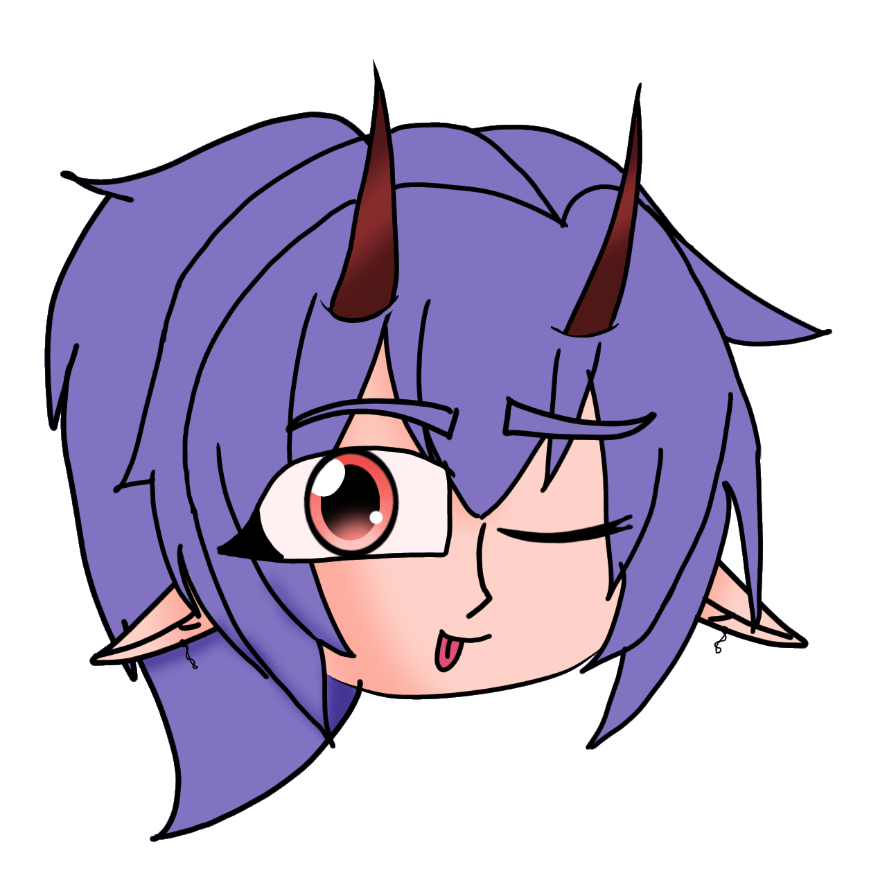
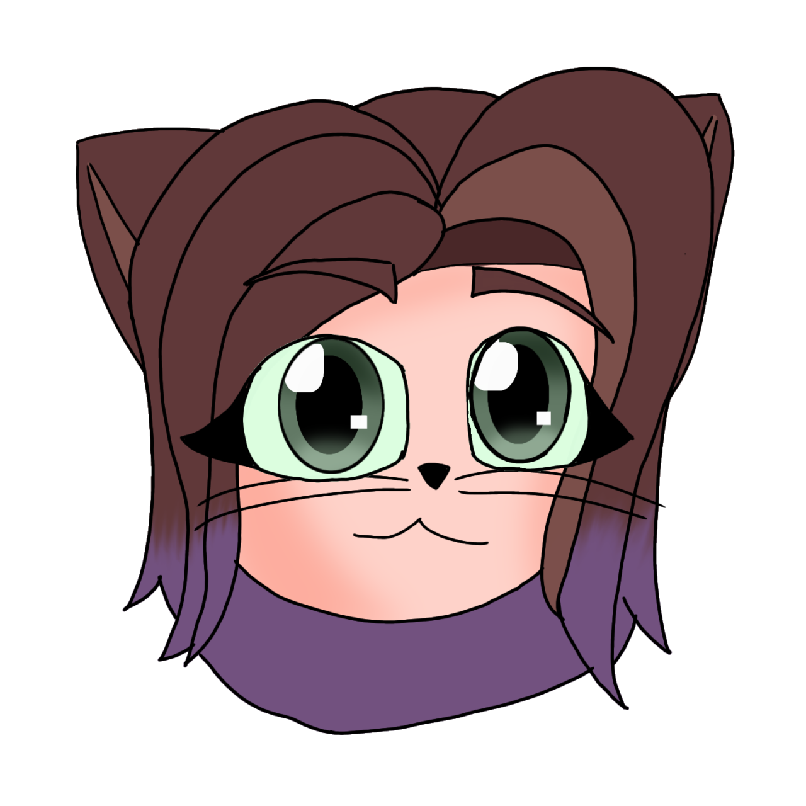
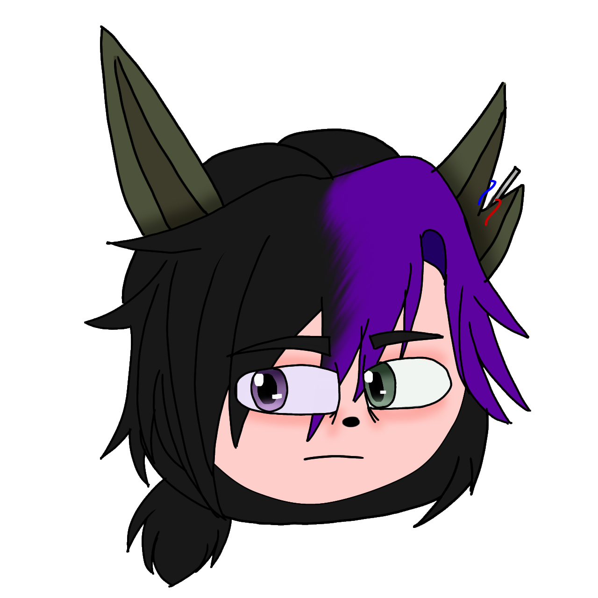
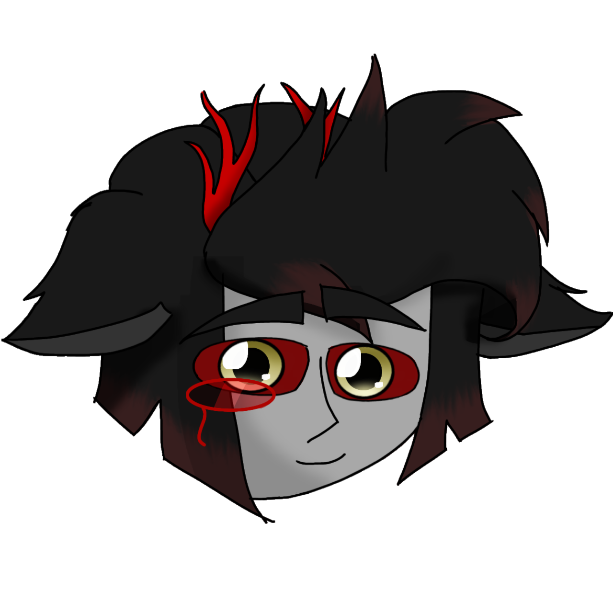

Главные персонажи
Знакомьтесь с ключевыми героями моей вселенной, каждый из которых обладает уникальной историей и способностями.
Лиза Гестант (Мояо)
ИнкфюжнЧернильный демон, жертва экспериментов секретной лаборатории. Сбежала в шесть лет, долгое время жила с Алисой и Бенди, теперь путешествует между мирами. Воскресила Уильяма.
Глория Гестант
БаканекоКошачий оборотень, сестра Мояо. После побега из лаборатории жила с отчимом, проходила психотерапию. Теперь путешествует по мирам с Аластором.
Вильям Афтон
УсагимимиГениальный изобретатель аниматроников, убитый своим партнёром Генри Эмили. Был воскрешён чернильным демоном Мояо. Обладает уникальными способностями. После воскрешения стал бессмертным гибридом человека и кролика с кибернетическими элементами.
Аластор Акумар
РадиодемонДемон из ада, создавший устройство для перемещения между мирами. Владеет огромной коллекцией оружия. Спокойный и расчётливый, но в гневе страшен.
Умершие персонажи
Персонажи, которые погибли в ходе событий вселенной, но оставили значительный след в истории.
Генри Эмили
Freddy'sБывший партнёр Уильяма Афтона по бизнесу, оказавшийся серийным убийцей детей. Создавал аниматроников-убийц и скрывал свои преступления. Был разоблачён Уильямом и убит им в отместку за свои злодеяния.
Ярослав Александрович Васильевич
Секретная лабораторияГениальный биоинженер, создатель Глории и Мояо. Пожертвовал собой, чтобы его "дочери" смогли сбежать из лаборатории. Холодный внешне, но глубоко привязан к своим созданиям. Перфекционист, требовательный, склонный к паранойе после смерти жены.
Раст Александрович Васильевич
Секретная лабораторияНарциссичный мужчина с жаждой контроля над всем. Не проявляет сочувствия к другим, руководствуясь исключительно собственной выгодой. Обладает чрезмерным сексуальным влечением. В будущем мутирует, но в текущей реальности находится вне этого мира. Был вовлечён в пытки и эксперименты.
Кликните на персонажа, чтобы увидеть его в полный рост и узнать детали

Лиза Гестант (Мояо)
Глория Гестант
Вильям Афтон
Аластор АкумарО вселенной персонажей
Эта вселенная объединяет персонажей с различными сверхъестественными способностями, происходящими из разных миров и реальностей. Здесь пересекаются судьбы существ из лабораторий, ада и альтернативных измерений.
Тёмная история Freddy Fazbear's Pizza
После серии таинственных исчезновений детей в Freddy Fazbear's Pizza Уильям Афтон начинает подозревать своего друга и партнёра — Генри Эмили. В ходе расследования он обнаруживает потайную комнату с синими принтами аниматроников-убийц, что наводит его на страшную правду.
Это открытие становится поворотным моментом в судьбе Уильяма, приводя к цепочке событий, которые навсегда изменят его жизнь и свяжут с другими персонажами вселенной. Вскоре после этого Уильям сам становится жертвой предательства, что приводит к его смерти и последующему воскрешению чернильным демоном Мояо.
Основные темы
- Побег из секретных лабораторий - история Лизы и Глории как жертв экспериментов, их борьба за свободу и самоопределение
- Межмировые путешествия - возможность перемещения между измерениями, созданная технологиями и магией
- Семейные узы - сложные отношения между сестрами и их окружением, поиск своего места в мире
- Искупление прошлого - попытки героев преодолеть травмы и изменить свою судьбу
- Гибридная природа - баланс между человеческим и сверхъестественным, поиск идентичности
- Тайны и предательства - скрытые комнаты, заговоры и раскрытие страшных истин
- Жизнь после смерти - история воскрешения Уильяма и его новая природа
Расы в вселенной
Разнообразие рас и видов, населяющих мультивселенную:
Инкфюжн
Гибрид человека и чернильной сущности. Способен изменять плотность тела и проникать сквозь материю. Чернильная форма позволяет манипулировать окружающим пространством.
Баканеко
Кошачий оборотень японского происхождения. Добрая версия сохраняет человеческое сознание. Обладает повышенной гибкостью, ночным зрением и кошачьими рефлексами.
Усагимими
Гибрид человека и кролика с кибернетическими элементами. Обладает повышенным интеллектом, скоростью и слухом. Киборгизация усиливает физические возможности.
Радиодемон
Технологически продвинутый демон, связанный с радиоволнами и электроникой. Может манипулировать электромагнитными полями и вмешиваться в работу техники.
Отношения между персонажами
Сложная сеть взаимоотношений, связывающая героев вселенной:
Лиза (Мояо)
- Глория: Младшая сестра, которую она защищает любой ценой. Чувствует ответственность за её безопасность.
- Вильям: Воскрешённый ею изобретатель, особые отношения на грани дружбы и взаимного уважения.
- Аластор: Нейтральные отношения, иногда сотрудничают ради общих целей.
Глория
- Мояо: Старшая сестра, образец для подражания. Смешанные чувства восхищения и страха перед её силой.
- Вильям: Отчим, опекун после побега из лаборатории. Отношения как с приёмным отцом.
- Аластор: Романтический партнёр, путешествует с ним между мирами. Полностью доверяет ему.
Вильям
- Мояо: Благодарен за воскрешение, уважает её силу, но осторожен в общении.
- Глория: Приёмная дочь, о которой заботится. Видит в ней шанс на искупление своих прошлых ошибок.
- Аластор: Уважает его знания и способности, но держит дистанцию из-за демонической природы.
- Генри Эмили: Бывший друг и партнёр, ставший врагом после раскрытия его преступлений.
Аластор
- Глория: Любимая, которую защищает. Видит в ней свет в своём тёмном существовании.
- Мояо: Восхищается её силой, но осторожен из-за непредсказуемости её характера.
- Вильям: Уважает его интеллект и изобретательность, иногда обменивается знаниями.